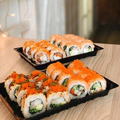
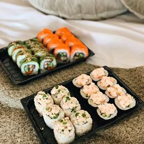
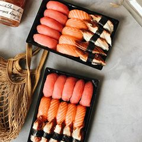
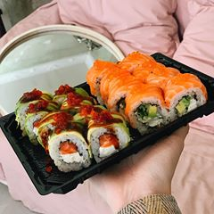
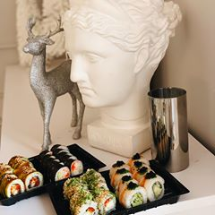

|
Наш телефон 966 |
Доставка и оплата
Магазин
Доставка суши Харьков, Одесса, Днепр - заказать в «966» суши и роллы на дом
    966 - заказать суши в Харькове, Днепре и Одессе
Японская кухня славится многими блюдами. Тем не менее, в Украине, ценители паназиатской кухни отдают предпочтение именно суши, и поэтому услуга доставки суши и роллов стала так популярна. Нет никакого смысла говорить о том, что представляют из себя эти лакомства, каждый ценитель японской кухни знает потрясающие вкусовые качества суши, роллов и менее распространенных сашими.
Высокое качество
В процессе приготовления, повара ресторана «Суши и Лапша» строго соблюдают кулинарные технологии, благодаря чему добиваются совершенства вкусовых качеств. При этом, акцент делается одновременно на нескольких деталях. В частности, немаловажную роль играют свойства сваренного риса и толщина рыбных кусочков. Придерживаясь всех этапов технологического процесса, который включает в себя множество нюансов, становится возможным получение идеального продукта. Разнообразия ингредиентов
Разнообразия ингредиентов
В нашем меню представлено множество разнообразных суши и роллов. Для их приготовления используются компоненты морского и речного происхождения. В частности, можно попробовать суши, в составе которых есть:
- лосось;
- угорь»;
- тигровые креветки;
- снежный краб;
- тунец.
Заказать суши на дом следует не только тем, кому по-настоящему нравится паназиатская кухня, но и тем, кто только планирует попробовать деликатесы японской кухни. После изучения предложений, нужно выбрать наиболее предпочтительные варианты используя удобную фильтрацию продукции по свойствам и ингредиентам, после чего оформить заказа удобным для Вас способом.